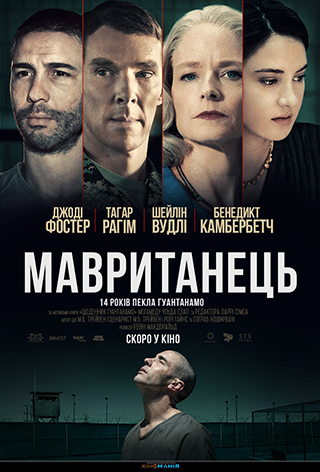

Мавританець
Реальна історія в’язня Гуантанамо, який провів за ґратами 14 років. У центрі сюжету мавританець
Мохаммед Ульд Слахі (Тагар Рагім). Влада США підозрює його у вербуванні терористів під час терактів
11 вересня. Без офіційних звинувачень і можливості захисту в суді, Слахі запроторюють до в’язниці.
Лише через 6 років він отримує право на адвоката, і у боротьбу проти урядової машини вступають
адвокатка Ненсі Голландер (Джоді Фостер) та її помічниця Тері Дункан (Шейлін Вудлі). Завдяки їхній
титанічній праці вдасться розкрити шокуючу істину та довести, що людський дух не стримають ніякі
ґрати. Фільм засновано на автобіографічній книзі «Щоденник Гуантанамо».